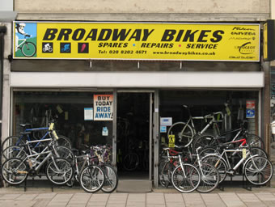

Welcome To Broadway Bikes
Spares - Repairs - Service
Broadway Bikes is that rarity in London, a friendly, family run cycle shop.
The business was started in 1981, by an 18 year old, promising racing cyclist, with no money but bags of enthusiasm and an initial stock of five second-hand bikes! The shop quickly gained a reputation for personal service and great value for money.

About us
Now, nearly 30 years later, we are firmly established as the area’s independent specialist local bike shop. Located on the main Edgware Road in West Hendon we have developed a large customer base, not just in Hendon, but also Edgware, Colindale, Kingsbury, Golders Green, Hampstead, Cricklewood, Kilburn and Willesden. In fact we have customers from all over North and North West London.
We keep a full range of ladies and gents bikes, including mountain bikes, hybrids and racing bikes, we also have children’s cycles for all ages. We always have a large selection of accessories in stock, lights, locks, helmets, comfortable saddles, and all the add-ons and upgrades you could need for your bicycle. We also have a vast range of spare parts to keep your bike running, and we have a hugely popular workshop, where we can offer expert and quick cycle repairs and bike servicing on any make and type of bike.
Broadway Bikes is a proud member of the Association of Cycle Traders, we are a real bike shop, and we do not sell car parts, prams or toys. The shop is run by the owners, who have a wealth of knowledge and expertise and really know their stuff. To us you are a valued customer, not a statistic on a balance sheet.
Opening Hours
Monday
9:30 am to 5:30pm
Tuesday
9:30 am to 5:30pm
Wednesday
9:30 am to 5:30pm
Thursday
CLOSED
Friday
9:30 am to 5:30pm
Saturday
9:30 am to 5:30pm
Sundays
11:00 am to 1:00pm
Bank Holidays
11:00am to 3:00pm
Transport
By train - Nearest tube station : Hendon Central, 10 minute walk. Nearest British Rail / Thameslink station : Hendon, 1 minute walk
By bus - 183, 142, 83, 32
By road - We are situated on West Hendon Broadway, which is the main Edgware Road (A5) as it passes through West Hendon, approximately 1/4 mile North of Staples Corner.